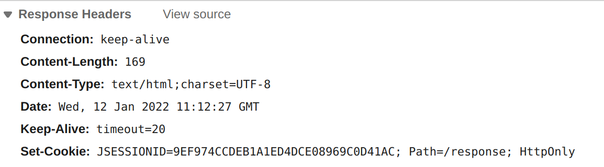

4.3 Session Management (1)
In the classical request-response model, the server cannot remember who you are. In other words, as far as the container's concerned, each request is from a new client. But, in real world, remembering the client is very important. For example, after you logged in a website, the website is expected to be able to recognize your identification. Otherwise, you have to input your name and password again and again for any subsequent action.

HTTP is stateless. In order to associate a request to any other request, you need a way to store user data between HTTP requests. One solution is to store some id to identify a unique user. This is how session works[1].
Session, literally, means a conversation, and it is to keep conversational state with the client across multiple requests.
Session is also one of the three scopes of attributes, so understanding how session works and how to use session would definitely enrich your programming toolbox.
How session works
Resident Identity Card has a unique ID for everyone in a country; every student has a unique ID in her campus. So, the idea is simple: the container keeps a unique ID for every session. So the whole story goes:
- On the client's first request, the container generates a unique session ID and gives it back to the client with the response.
- The client sends back the session ID with each subsequent request.
- The container sees the ID, finds the matching session, and associates the session with the request.
Note that the session ID is shipped with the response. Let's check the Network tab using the web browser of the response header for the first time (ch3/response). Set-Cookie is just another header sent in the response, and JSESSIONID is the ID generated by the container. As we expected, for the subsequent requests, we will find the same JSESSIONID at the request's header again.

As we can see, cookie is used to exchange the ID between the client and server. So what is cookie exactly? Of course, it is not the biscuit in your favorite bakery.
An HTTP cookie (web cookie, browser cookie) is a small piece of data that a server sends to a user's web browser[2].
The browser may store the cookie and send it back to the same server with later requests. Typically, an HTTP cookie is used to tell if two requests come from the same browser—keeping a user logged in, for example. It remembers stateful information for the stateless HTTP protocol.
Back the Set-Cookie header. A simple cookie is set like this:
Set-Cookie: <cookie-name>=<cookie-value>
JSESSIONID is the name generated by the servlet container; other severs might use different names. And as we will see soon, like any other header, we can put anything we like into cookies.
By the way, strictly speaking, the statement "On the client's first request, the container generates a unique session ID" is not correct. We need to figure out another question: Under what conditions is a JSESSIONID created?[3] Now only partial answer is given:
Every call to JSP page implicitly creates a new session if there is no session yet.
We will investigate this problem in the next subsection.
How and when session is created?
Did we manually Set-Cookie for the response? No. So the container does virtually all the cookie work for us! How to send a session with cookie in the response? One line of code is enough:
HttpSession session = request.getSession();
That's it. Everything else happens automatically[4]:
- You don't make the new
HttpSessionobject yourself. - You don't generate the unique session ID.
- You don't make the new
Cookieobject. - You don't associate the session ID with the cookie.
- You don't set the
Cookieinto the response (underSet-Cookieheader).
Session is created when your code calls getSession() for the first time, and the subsequent calls would return the same session if it exits. In fact, getSession() is shorthand for getSession(true), and true means the statement "crate a new one if not exits" is true. So getSession(false) return a session or null.
For example, the following code in HelloServlet.java of ch4/session would output This is a new session on the first visit, and output Welcome back otherwise.
HttpSession session = request.getSession(false);
if (session == null) {
out.println("This is a new session");
request.getSession();
} else {
out.println("Welcome back");
}
We can also ask the session to know if the session is new by isNew() method of HttpSession. The refactor work is left as an exercise to readers.
How long session lives
No one is immortality, neither is a session. You might notice the message on the log-in page, such as Remember me for one week. It means the browser will keep your stayed for some time, and after this duration, it forgets you, and you have to log in again. Anyway, we may need to consider the lifespan of a session.
We can know what these APIs do from their names without much trouble. And we only concentrate on two methods:
void setMaxInactiveInterval(int interval) Specifies the time, in seconds, between client requests before the servlet container will invalidate this session.
This method is to set the max interval this session can live. For example, setMaxInactiveInterval(60 * 60 * 24 * 7) means it will be invalidated if the same client have not sent requests for more than 7 days[6].
void invalidate() Invalidates this session then unbinds any objects bound to it.
This method is to kill a session manually. Of course, when the application goes down (or crashes), all sessions will also die. There is another method to set the timeout. Configuring a timeout in the DD has virtually the same effect as calling setMaxInactiveInterval() on every session in this web application. But note the timeout in the DD is in minutes, not seconds.
<session-config>
<session-timeout>60</session-timeout>
</session-config>
An example: log in
In this example, if she does not log in, then the home page will display Hello guest; if you log in with her email, let's say mary@gmail.com, then the home page will display Hello mary@gmail.com.
In HomeServlet.java, we check if there is an attribute named name in the session. If so, it means she has logged in; otherwise, she is a guest user. And home.jsp, as the view, is used to display the hello message from the request's attribute.
HttpSession session = request.getSession();
if (session.getAttribute("name") == null) {
request.setAttribute("name", "Guest");
} else {
request.setAttribute("name", session.getAttribute("name"));
}
request.getRequestDispatcher("/WEB-INF/home.jsp").forward(request, response);
In LoginServlet.java, its doPost accepts user's email (note that password is ignored) and then puts her email into session's attribute. Finally, it redirects to home page.
String email = request.getParameter("email");
HttpSession session = request.getSession();
session.setAttribute("name", email);
response.sendRedirect("home");
In LogoutServlet.java, it just kills the session:
request.getSession().invalidate();
response.sendRedirect("home");
As for the logout, sometimes we would like to keep some attributes, then we can remove the name:
request.getSession().removeAttribute("name");
void removeAttribute(java.lang.String name) Removes the object bound with the specified name from this session. If the session does not have an object bound with the specified name, this method does nothing.
Or alternatively, setting its value to null:
request.getSession.setAttribute("name", null);
Try your best to understand how the code works, especially how data is shared and passed between front-end and back-end.
[1] Session, or more specifically HttpSession, is not the only option, but it is easy to implement.
[2] https://en.wikipedia.org/wiki/HTTP_cookie
[3] https://stackoverflow.com/questions/595872
[4] We need also consider the case when the client doesn't accept cookies. If cookies are disabled, then isNew() method will always return true. In this situation, we can use URL rewriting by appending session at the URL. But since it is handled in a vendor-specific way, we won't discuss it in this book.
[5] Only lifespan related APIs are listed here, and attributes related APIs are listed in Fig 4.3.
[6] It is commonly misunderstood that the session will die in 7 days since it was created.